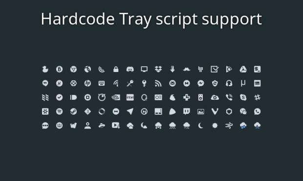

De la mano de X-varlesh-x nos llega la actualización de Papirus, un tema de iconos planos, coloridos, ligeramente infantiles pero que quedan de fábula en nuestro escritorio Plasma, dotándole de un aire fresco y moderno. Además, es compatible con las carpetas gestión de los colores de Plasma, tanto para carpetas en Dolphin como en la esquemas de colores generales de las ventanas. Y es que la sencillez, la limpieza y la completud (si existe esta palabra) son las las cartas de presentación de este tema tal y como podéis ver en las dos imágenes inferiores.
Aunque podéis encontrar información en la página la Store de KDE, el proyecto está alojado en Github, donde encontraréis (como he hecho yo al elaborar este artículo) que este proyecto cuenta también con temas para LibreOffice, fondos de pantalla, smplayer, Plasma, vlc, kmail, ssd, etc. Esto me lleva a tener que dedicarle próximamente otro artículo a este proyecto en el que comentaré otros aspectos del mismo.
Y como siempre digo, si os gusta el el pack de iconos podéis “pagarlo” de muchas formas en la página de KDE Store, que estoy seguro que el desarrollador lo agradecerá: puntúale positivamente, hazle un comentario en la página o realiza una donación. Ayudar al desarrollo del Software Libre también se hace simplemente dando las gracias, ayuda mucho más de lo que os podéis imaginar, recordad la campaña I love Free Software Day 2017 de la Free Software Foundation donde se nos recordaba esta forma tan sencilla de colaborar con el gran proyecto del Software Libre y que en el blog dedicamos un artículo.